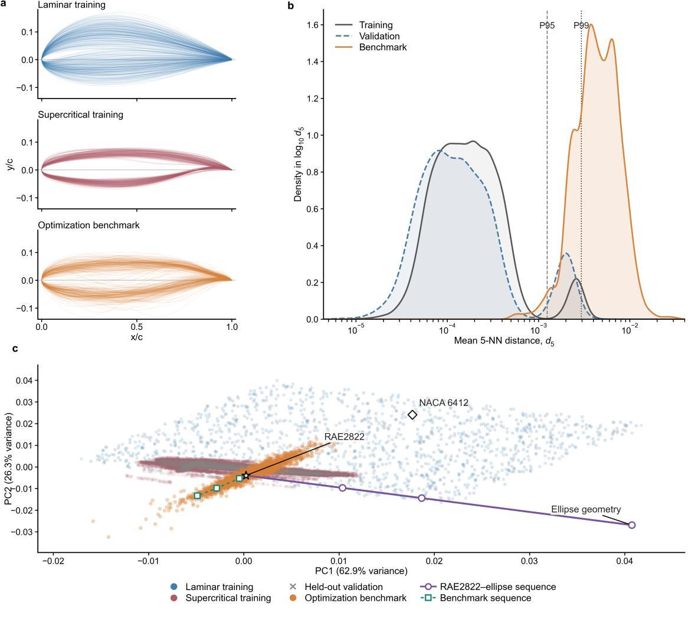
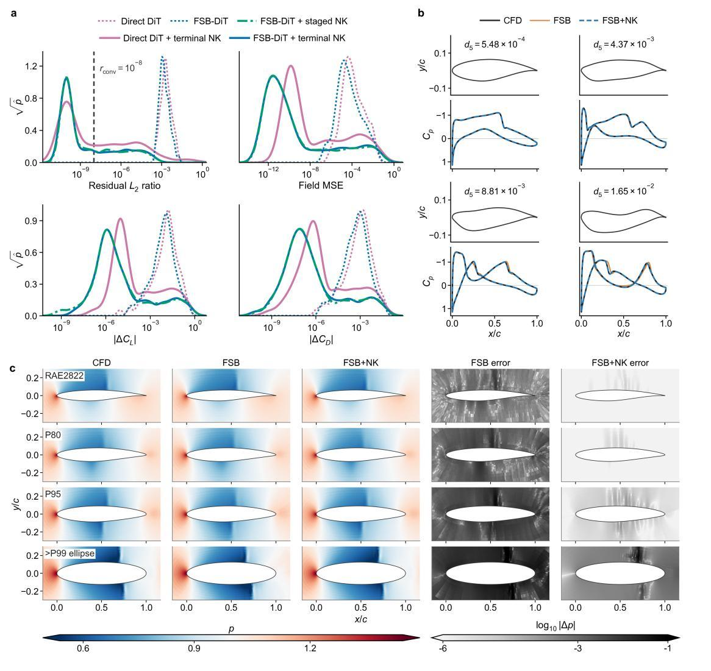
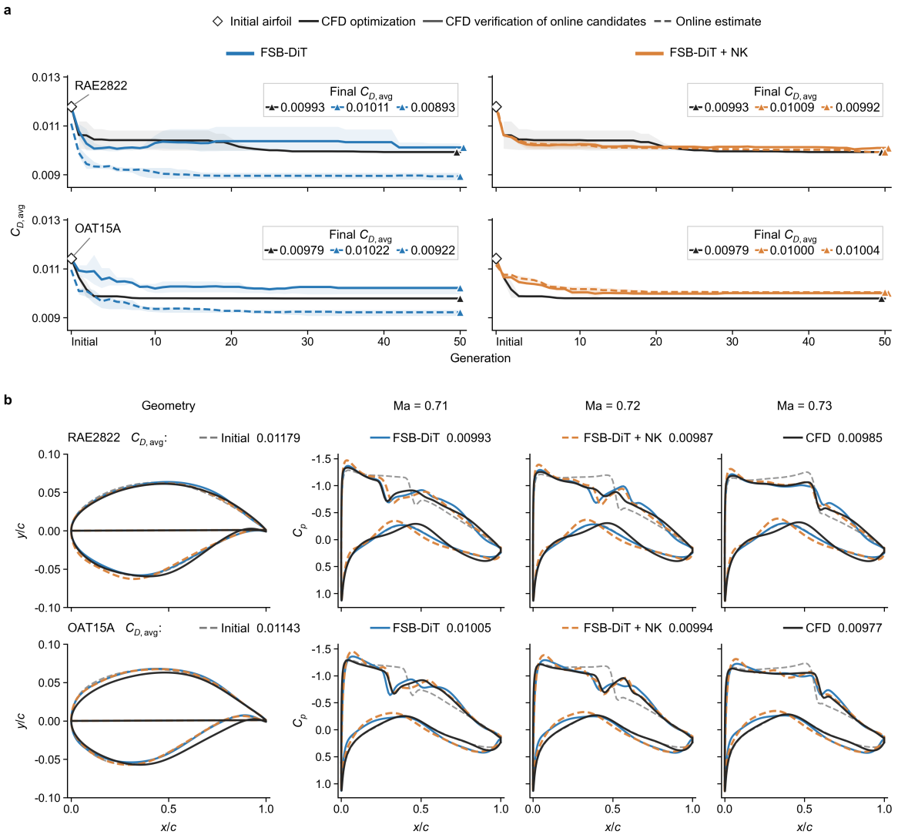

Condition
Airfoil geometry, Mach number, and angle of attack define the steady-flow query.
Tsinghua University · Steady aerodynamic CFD
A solver-coupled framework that turns rapid neural flow-field predictions into residual-controlled, solver-accepted states.
School of Aerospace Engineering and State Key Laboratory of Advanced Space Propulsion, Tsinghua University
Why it matters
Neural surrogates predict complete flow fields quickly, but finite training data make their behaviour unreliable when aerodynamic design moves out of distribution. Surrogate–Newton uses the learned prediction as an initializer—not as an independently accepted CFD solution—and lets the target solver evaluate and correct it.
Across optimization-derived transonic airfoils, online supercritical-airfoil design, and three-dimensional flying-wing configurations, the experiments separate prediction accuracy from solver consistency and quantify the trade-off between learned initialization, correction budget, and conventional cold-start CFD.
Method
The same target discretization, residual, and convergence threshold are used to evaluate and correct every predicted state.
Airfoil geometry, Mach number, and angle of attack define the steady-flow query.
The surrogate rapidly estimates the complete flow and turbulence state.
The prediction initializes a geometry-matched state in the target CFD solver.
Newton–Krylov updates reduce the native residual to the solver acceptance threshold.
Evidence
The benchmark uses airfoils visited by real transonic optimization trajectories rather than small perturbations of a single canonical shape.

01
Mean five-nearest-neighbour distance in the 26-dimensional CST shape representation provides a transparent OOD indicator, exposed in the interactive demo as a distance and training percentile.

02
Newton–Krylov correction reduces residual, field, lift, and drag errors across the benchmark. The effect remains visible on geometries beyond the 99th percentile of training distance.

03
In practical supercritical-airfoil optimization, the coupled workflow reaches a 15.5-fold generation-level speedup over CFD while improving the reliability of online candidate evaluation.
Interactive release
Select or upload an airfoil, edit its geometry, evaluate its OOD distance, run the surrogate, and compare Newton–Krylov recovery with a cold-start ADflow reference on common plots.
Citation
Code is released under BSD-3-Clause. Solver-stack licenses and dependency boundaries are documented in the repository.
@article{lei2026surrogate_newton,
title = {Reliable and efficient steady CFD from surrogate predictions
through Newton--Krylov correction},
author = {Lei, Mingcheng and Tang, Weishao and Zhang, Yufei and Chen, Haixin},
year = {2026},
journal = {arXiv preprint arXiv:2608.04400},
url = {https://arxiv.org/abs/2608.04400}
}